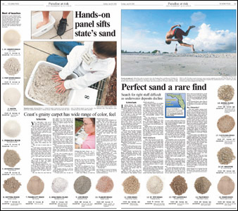

 |
Paradise at Risk: The News-Press is a local paper positioning itself as an innovator inside Gannett. One of the first steps in this project is 'convergence.' Even with such a serious topic - beach erosion costs millions and beach-related revenue generates billions - the project staff still maintained a sense of humor. We created a state-wide sample and ranked (quite unscientifically) the sand from 18 beaches around the state - Fort Myers Beach came in 2nd! | |||
| [ BACK | CLOSE ] For a full size page: [ DOWNLOAD PDF ] | ||||